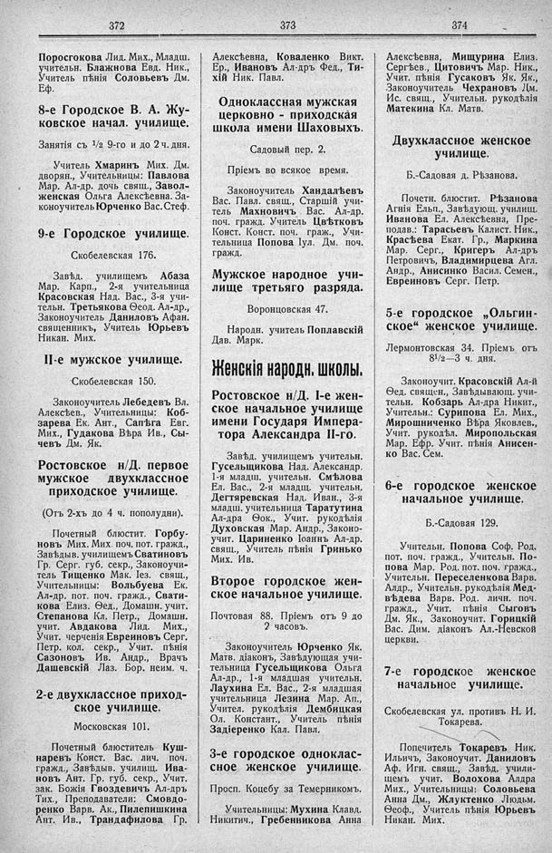

Лист источника 256
Скан

Распознанный текст
372
Поросгокова Лид. Мих., Младш.
учительн. Блажнова Евд. Ник.,
Учитель пѣнія Соловьевъ Дм.
Еф.
8-е Городское В. А. Жу-
ковское начал. училище.
Занятія съ 1/2 9-го и до 2 ч. дня.
Учитель Хмаринъ Мих. Дм.
дворян., Учительницы: Павлова
Мар. Ал-др. дочь свящ., Завол-
женская Ольга Алексѣевна. За-
коноучитель Юрченко Вас. Стеф.
9-е Городское училище.
Скобелевская 176.
Завѣд. училищемъ Абаза
Мар. Карп., 2-я учительница
Красовская Над. Вас., 3-я учи-
тельн. Третьякова Ѳеод. Ал-др.,
Законоучитель Даниловъ Афан.
священникъ, Учитель Юрьевъ
Никан. Мих.
II-е мужское училище.
Скобелевская 150.
Законоучитель Лебедевъ Вл.
Алексѣев., Учительницы: Коб-
зарева Ек. Ант., Сапѣга Евг.
Мих., Гудакова Вѣра Ив., Сы-
чевъ Дм. Як.
Ростовское н/Д. первое
мужское двухклассное
приходское училище.
(Отъ 2-хъ до 4 ч. пополудни).
Почетный блюстит. Горбу-
новъ Мих. Мих. поч. пот. гражд.,
Завѣдыв. училищемъ Сватиновъ
Гр. Серг. губ. секр., Законоучи-
тель Тищенко Мак. Іез. свящ.,
Учительницы: Вольбуева Ек.
Ал-др. пот. поч. гражд., Свати-
кова Елиз. Ѳед., Домашн. учит.
Степанова Кл. Петр., Домашн.
учит. Авдакова Лид. Мих.,
Учит. черченія Евреиновъ Серг.
Петр. кол. секр., Учит. пѣнія
Сазоновъ Ив. Андр., Врачъ
Дашевскій Лаз. Бор. неим. ч.
2-е двухклассное приход-
ское училище.
Московская 101.
Почетный блюститель Куш-
наревъ Конст. Вас. лич. поч.
гражд., Завѣдыв. училищ. Ива-
новъ Ант. Гр. губ. секр., Учит.
зак. Божія Гвоздевичъ Ал-дръ
Тих., Преподаватели: Смовдо-
ренко Варв. Ак., Пилепишкина
Ант. Ив., Трандафилова Гр.
373
Алексѣевна, Коваленко Викт.
Ер., Ивановъ Ал-дръ Фед., Ти-
хій Ник. Павл.
Одноклассная мужская
церковно - приходская
школа имени Шаховыхъ.
Садовый пер. 2.
Пріемъ во всякое время.
Законоучитель Хандалѣевъ
Вас. Павл. свящ., Старшій учи-
тель Махновичъ Вас. Ал-др.
поч. гражд. Учитель Цвѣтковъ
Конст. Конст. поч. граж., Учи-
тельница Попова Іул. Дм. поч.
гражд.
Мужское народное учи-
лище третьяго разряда.
Воронцовская 47.
Народн. учитель Поплавскій
Дав. Марк.
Женскія народн. школы.
Ростовское н/Д. I-е жен-
ское начальное училище
имени Государя Импера-
тора Александра II-го.
Завѣд. училищемъ учительн.
Гусельщикова Над. Александр.
1-я младш. учительн. Смѣлова
Ел. Вас., 2-я младщ. учительн.
Дегтяревская Над. Иван., 3-я
младш. учительница Таратутина
Ал-дра Ѳок., Учит. рукодѣлія
Духовская Мар. Андр., Законо-
учит. Цариненко Іоаннъ Ал-др.
свящ., Учитель пѣнія Гринько
Мих. Ив.
Второе городское жен-
ское начальное училище.
Почтовая 88. Пріемъ отъ 9 до
2 часовъ.
Законоучитель Юрченко Як.
Матв. діаконъ, Завѣдующая учи-
тельница Гусельщикова Ольга
Ал-др., 1-я младшая учительн.
Лаухина Ел. Вас., 2-я младшая
учительница Лезина Мар. Ап.,
Учител. рукодѣлія Дембицкая
Ол. Констант., Учитель пѣнія
Задіеренко Кал. Павл.
3-е городское одноклас-
сное женское училище.
Просп. Коцебу за Темерникомъ.
Учительницы: Мухина Клавд.
Никитич., Гребенникова Анна
374
Алексѣевна, Мищурина Елиз.
Сергѣев., Цитовичъ Мар. Ник.,
Учит. пѣнія Гусаковъ Як. Як.,
Законоучитель Чехрановъ Дм.
Ис. свящ., Учительн. рукодѣлія
Матекина Кл. Матв.
Двухклассное женское
училище.
Б.-Садовая д. Рѣзанова.
Почетн. блюстит. Рѣзанова
Агнія Ельп., Завѣдующ. училищ.
Иванова Ел. Алексѣевна, Пре-
подав.: Тарасьевъ Калист. Ник.,
Красѣева Екат. Гр., Маркина
Мар. Серг., Кригеръ Ал-дръ
Петровичъ, Владимирцева Агл.
Андр., Анисинко Васил. Семен.,
Евреиновъ Серг. Петр.
5-е городское „Ольгин-
ское“ женское училище.
Лермонтовская 34. Пріемъ отъ
8 1/2—3 ч. дня.
Законоучит. Красовскій Ал-й
Ѳед. священ., Завѣдывающ. учи-
тельн. Кобзарь Ал-дра Никит.,
Учительн.: Сурипова Ел. Мих.,
Мирошниченко Вѣра Яковлев.,
Учит. рукодѣл. Миропольская
Мар. Ефр. Учит. пѣнія Анисен-
ко Вас. Сем.
6-е городское женское
начальное училище.
Б.-Садовая 129.
Учительн. Попова Соф. Род.
пот. поч. гражд., Учительн. По-
пова Мар. Род. пот. поч. гражд.,
Учительн. Переселенкова Варв.
Алдр., Учительн. рукодѣлія Мед-
вѣдева Варв. Род. личн. поч.
гражд., Учит. пѣнія Сыговъ
Дм. Як., Законоучит. Горицкій
Вас. Дим. діаконъ Ал.-Невской
церкви.
7-е городское женское
начальное училище.
Скобелевская ул. противъ Н. И.
Токарева.
Попечитель Токаревъ Ник.
Ильичъ, Законоучит. Даниловъ
Аф. Игн. свящ., Завѣд. учили-
щемъ учит. Волохова Алдра
Мих., Учительницы: Соловьева
Анна Дм., Жлуктенко Людьм.
Ѳеоф., Учитель пѣнія Юрьевъ
Никан. Мих.